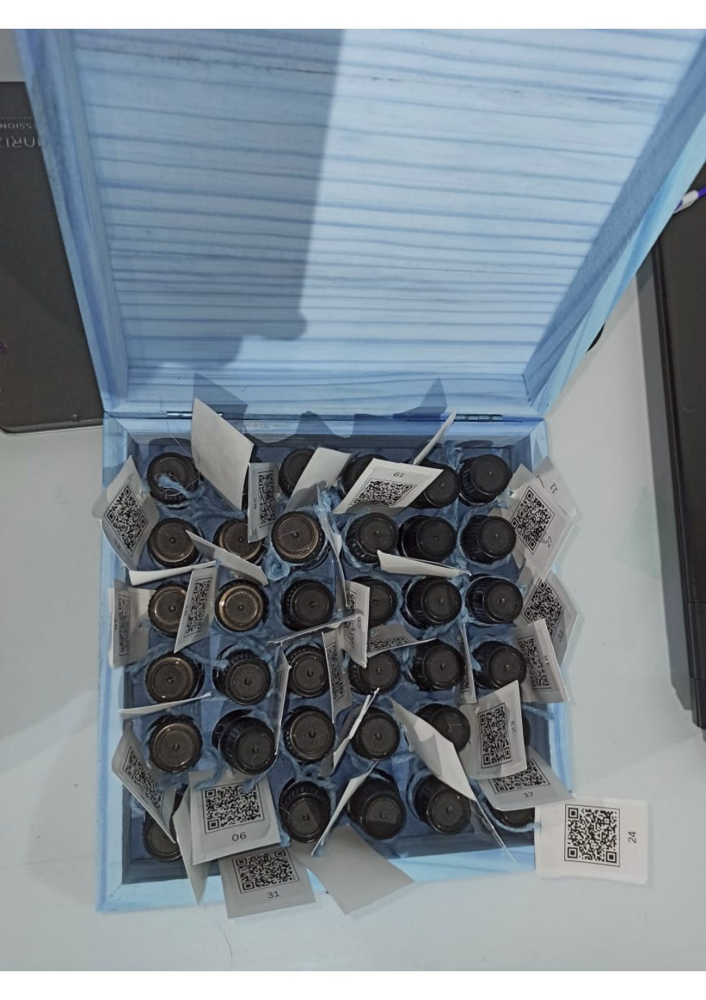
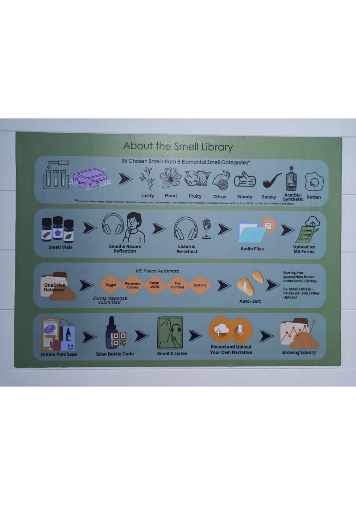
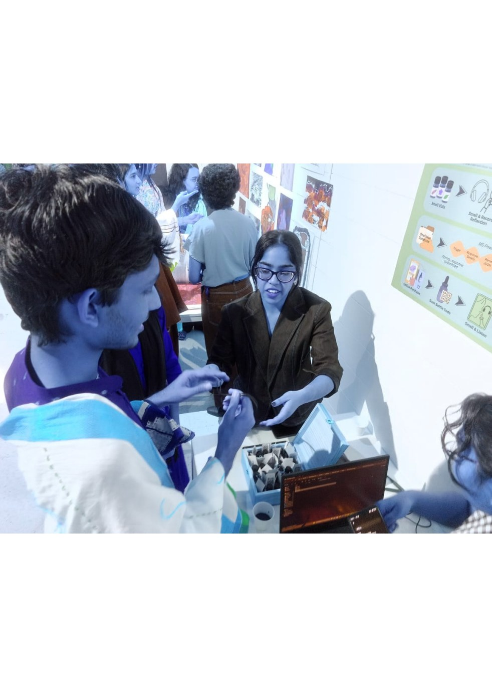
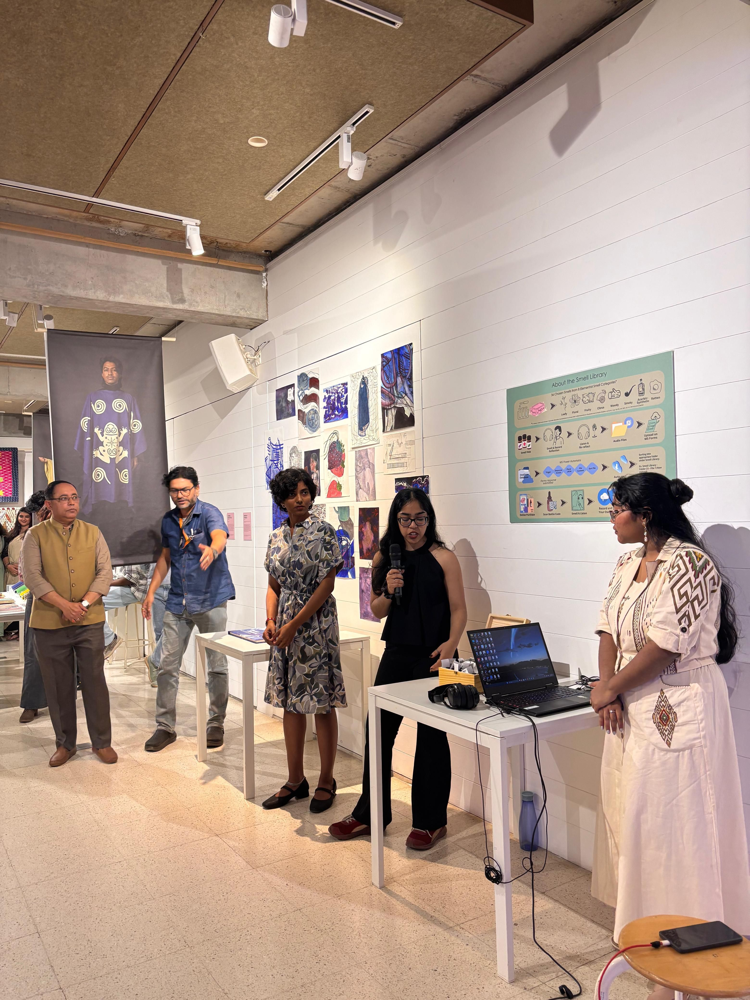

Sensory UX Context: The Neglected Sense
Digital culture and modern experience design are overwhelmingly visual and auditory. Yet neurobiologically, olfactory perception has a direct synaptic pathway to the amygdala and hippocampus, evoking autobiographical memories with greater emotional intensity and vividness than any image or sound.
The Smell Library was designed to investigate how physical scent cues could trigger dormant autobiographical reflections and transform a gallery audience into an active, collaborative oral history archive.
"Listening to another stranger's voice reflection after smelling an aroma triggers deeper, re-reflected personal memories than smelling alone,creating an intimate 'shared space of attuned experiences'." Exhibition Research Observation
Taxonomy of 36 Aromas across 8 Families
Rather than presenting generic pleasant perfumes, the taxonomy was curated across 8 contrasting emotional and environmental spectra:
| Aromatic Family | Sample Essences | Evocative Association Target |
|---|---|---|
| 1. Leafy | Crushed grass, eucalyptus, fresh herbs | Monsoon walks, rural gardens, childhood outdoor play |
| 2. Floral | Jasmine, night queen, marigold, rose | Religious temple rituals, wedding garlands, festive gatherings |
| 3. Fruity | Raw mango, guava, ripe banana | Summer markets, seasonal kitchen preparation |
| 4. Citrus | Bergamot, lemon rind, orange blossom | Morning routines, freshness, vitality |
| 5. Woody | Sandalwood, cedar, vetiver, teak | Ancestral furniture, old wardrobes, sacred spaces |
| 6. Smoky | Incense resin, burnt charcoal, campfire | Winter evenings, temple fires, street food stalls |
| 7. Acerbic-Synthetic | Petroleum distillate, disinfectant, iodine | Hospitals, school laboratories, railway platforms |
| 8. Rotten | Composting decay, sulfur, overripe matter | Mortality, decay, biological impermanence |
The Automated Cloud Pipeline & Pivot
Why Manual File Management Failed: In preliminary trials, visitors recorded audio memos on handheld voice recorders. The curators attempted to manually transfer, rename, and sort audio files by scent ID. During live gallery influxes, this manual process immediately collapsed under human error and delay. To solve this, an automated no-code cloud pipeline was architected.
The finalized pipeline connected the physical artifact directly to cloud storage:
- Physical Trigger: The visitor smells a vial and scans its custom QR tag with their smartphone.
- Form Submission: The browser opens a lightweight Microsoft Forms intake prompt where the participant records a voice memory.
- Power Automate Cloud Flow: Upon submission, MS Power Automate parses the incoming JSON payload, matches the unique Scent ID (1–36), generates standardized metadata, and transfers the audio file directly into the matching folder:
Smell Library / Folder [ID] / Memory_[Timestamp].mp3. - Real-Time Listening Station: A paired tablet and headphone station at the gallery automatically refreshed the directory, allowing subsequent visitors to listen to preceding reflections immediately.

Exhibition Testing, Limitations & Retrospective


- Olfactory Decay: Essential oils naturally oxidize and dissipate through repeated uncapping; requires manual replenishment every 48 hours during intensive exhibitions.
- Audio Recordings: [AUDIO ARCHIVE CLOUD FILES NOT INCLUDED IN PDF] Audio files are stored on institutional cloud servers; verbatim audio transcripts are omitted from the print submission.
Retrospective
The Smell Library bridges the physical and digital domains, demonstrating how intuitive no-code cloud automation (Power Automate) can be deployed to support multisensory public installations without human operational friction.